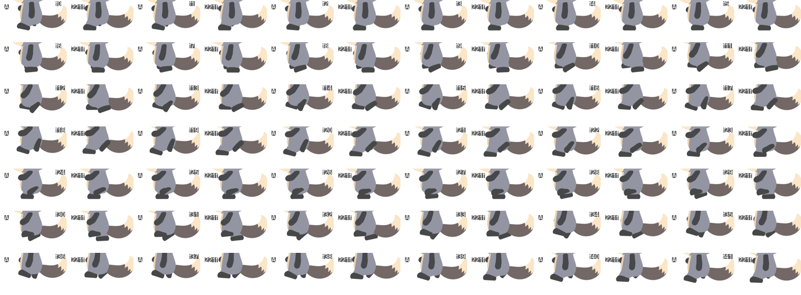
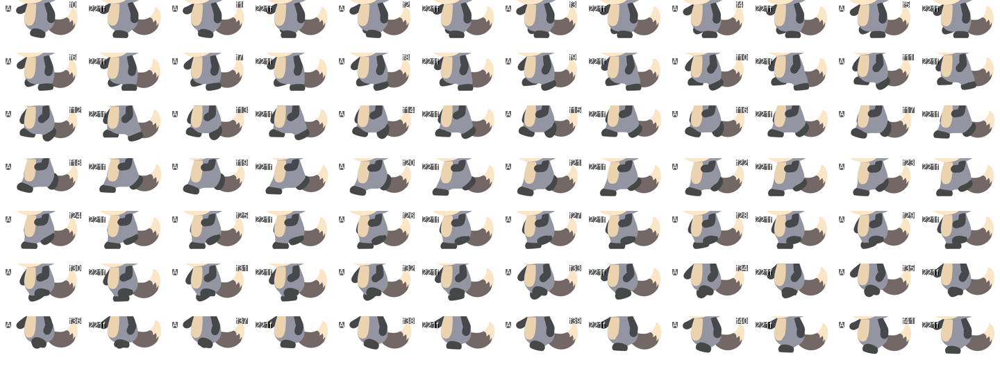
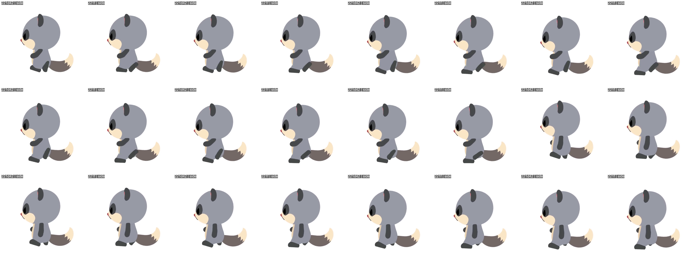

2026-10-01。「足首がカタカタして落ち着かない」へのご指摘に対して、今の方法（A）の走りの足首の動きだけを直しました。足の位置・体・腕・尻尾・頭は 221d42 とまったく同じです。処理はすべて Windows 機で行っています。
| 221d42（前の版） | 221f（今回） | |
|---|---|---|
| 接地中に足を平らに保つ時間 | 1.5 コマ | 7 コマ |
| 着地してから足が落ち着くまで | 3.25 コマ | 1 コマ |
| 着地の足の角度 | つま先を 12° 上げる | ほぼ平ら（1.5°） |
| 足首の回転の速さ（最大） | 1 コマ 8.8° | 1 コマ 8.4°（基準内） |
| 後ろへの振り上げ | 78° | 48°（控えめ） |
| 足の滑り・床へのめり込み | ほぼ 0 | ほぼ 0（同じ） |
接地中も回り続けていた足が、床にしっかり落ち着くようになりました。
1/4 速度（足首の違いはこちらが見やすいです）：


